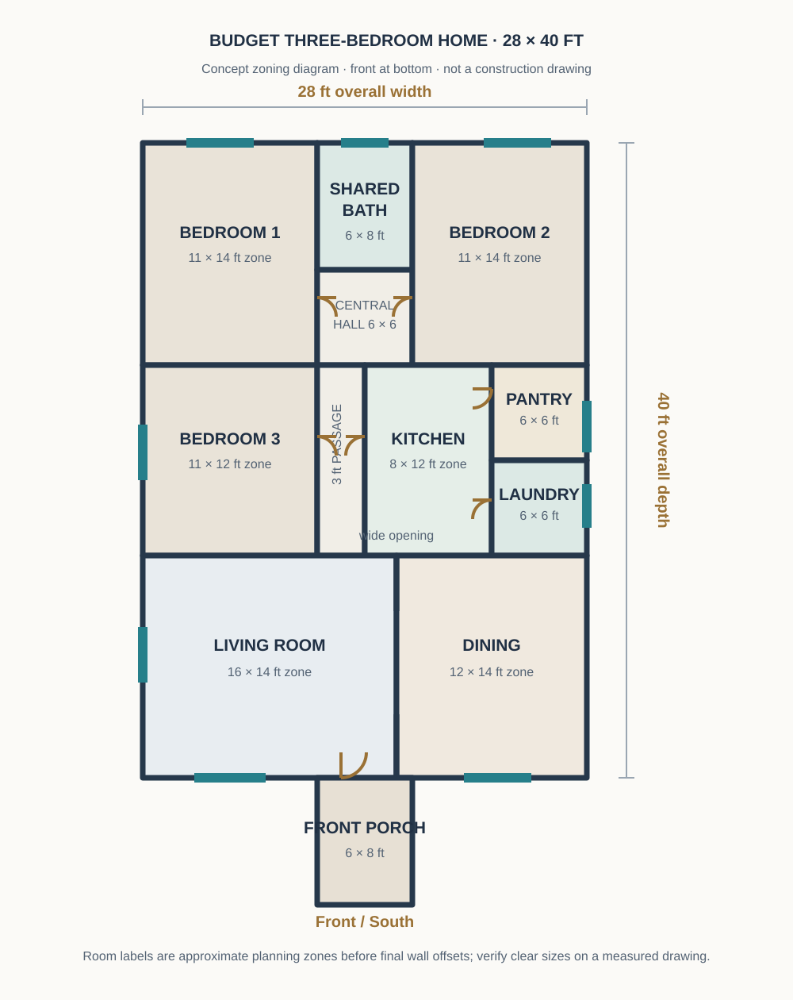
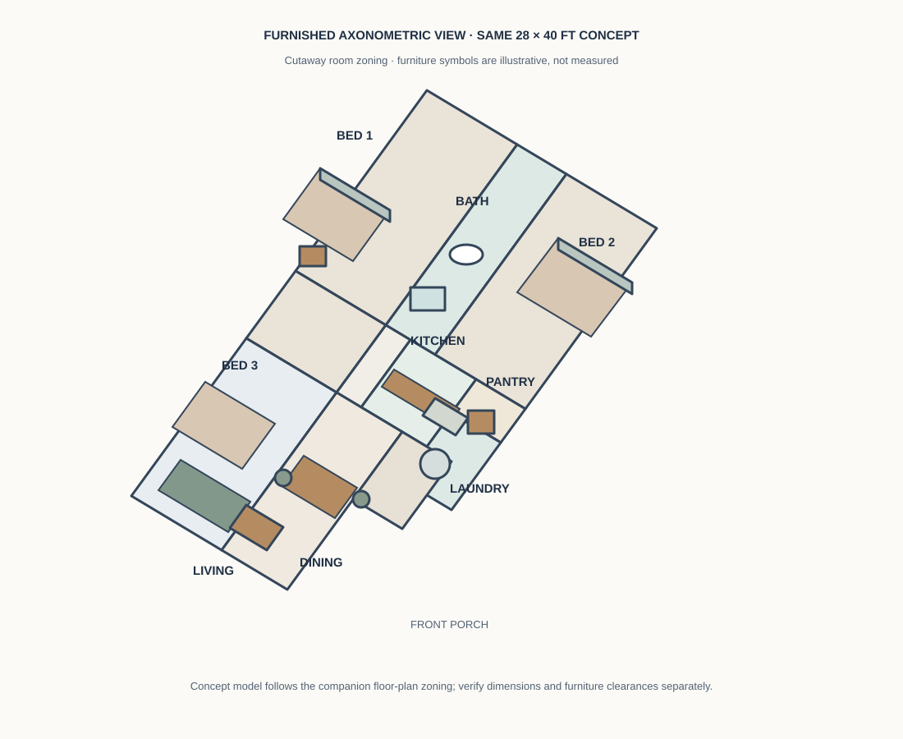
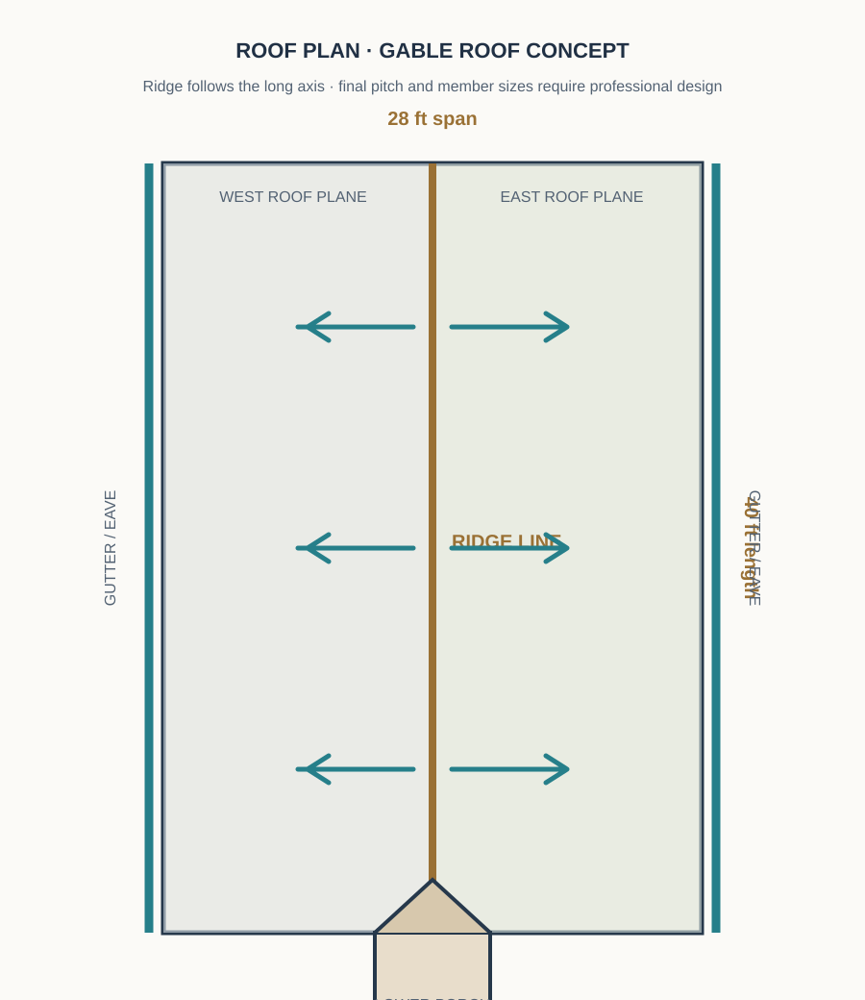
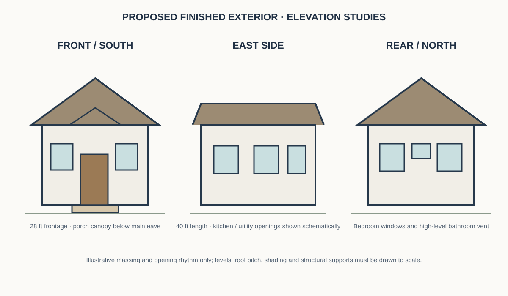
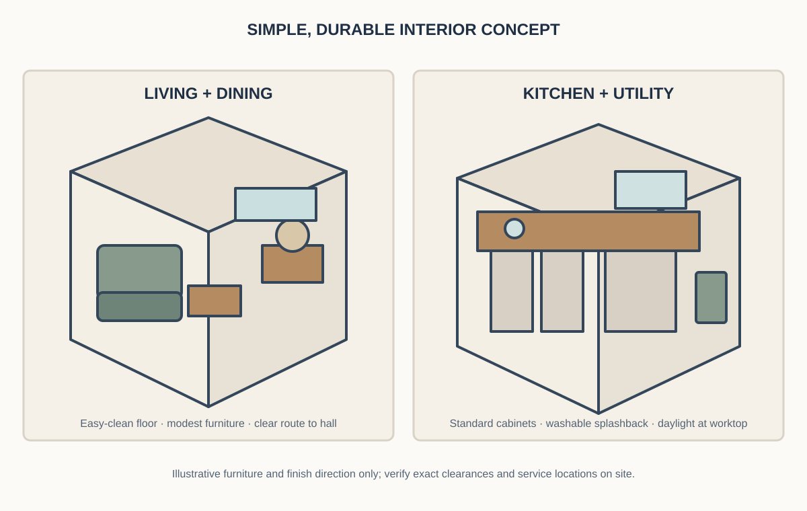

HOUSE PLANS · BUDGET HOUSE PLANS · ARTICLE 01 · 14 NOVEMBER 2026
28 × 40-Foot Budget Three-Bedroom House Plan
A practical single-storey family-home concept with a shared bathroom, separate kitchen, pantry, utility space and a simple gable roof.
When a family needs three bedrooms but wants to keep the building form straightforward, a compact rectangular footprint can be a useful starting point. This 28 × 40-foot study organises the shared living spaces toward the front, places the kitchen and utility rooms along one side, and groups the bedrooms around a short central passage. It avoids an attached carport and a second bathroom to keep the initial scope more controlled.
1. Design brief and overall dimensions
The main planning envelope is 28 feet wide by 40 feet deep, or approximately 1,120 square feet before any separate porch projection. A 6 × 8-foot front porch adds about 48 square feet of covered outdoor space if it is roofed. The resulting roofed area would be approximately 1,168 square feet, subject to how the final drawings measure covered areas.
The concept is intentionally simple: one storey, a mostly rectangular footprint, a single shared bathroom, a straightforward kitchen, and a gable roof with a continuous ridge. The design does not include a garage, elaborate balcony, internal courtyard or decorative roof valleys. Those omissions can reduce complexity, but they do not guarantee a particular construction price.
2. Dimensioned 2D floor-plan concept

The front zone combines the living room and dining area. A short central route leads to the bedroom wing, while the kitchen, pantry and laundry sit on the opposite side. The shared bathroom is reached from the central hall, rather than through a bedroom, so it can serve family members and visitors.
| Space | Nominal planning block | Purpose and review point |
|---|---|---|
| Living room | 16 × 14 ft zone | Front family space; test sofa, television and entrance circulation. |
| Dining area | 12 × 14 ft zone | Near the kitchen; confirm table and chair pull-back space. |
| Bedroom 1 | 11 × 14 ft zone | Rear bedroom; allow bed access and wardrobe storage. |
| Bedroom 2 | 11 × 14 ft zone | Second rear bedroom; keep the window wall usable. |
| Bedroom 3 | 11 × 12 ft zone | Flexible child, guest or study-bedroom. |
| Kitchen | 8 × 12 ft zone | Compact work area with a planned route to dining. |
| Shared bathroom | 6 × 8 ft zone | One common wet room; fixture clearances need checking. |
| Pantry | 6 × 6 ft zone | Dry-food and small-appliance storage. |
| Laundry / utility | 6 × 6 ft zone | Washer, cleaning supplies and service access. |
| Circulation | 3 × 12 ft plus 6 × 6 ft zones | Connects living, bedrooms and bathroom; verify clear width after finishes. |
3. How the rooms work together
Living and dining
Place a modest three-seat sofa along a solid wall and keep the route from the front door toward the central passage unobstructed. A compact television or media unit can face the sofa. In the dining area, a four- to six-seat table may work depending on the final clear dimensions; check that chairs can be pulled back without blocking the kitchen route.
Three bedrooms
The two rear bedrooms share the quieter end of the plan. Bedroom 3 is closer to the middle of the house and can serve as a child's room, guest room or work-from-home space. Choose bed and wardrobe sizes before fixing the window and door positions. Avoid placing a wardrobe where it blocks an operable window or the natural walking route.
Kitchen, pantry and laundry
The separate kitchen has a direct relationship with the dining area. A straight or compact L-shaped counter can be tested against the final room dimensions. Keep the refrigerator, sink, preparation surface and cooking appliance in a logical sequence, while leaving safe working space. The pantry and laundry are shown as separate small rooms; if the actual site or budget is tight, a designer can test whether one of these functions should become built-in storage instead.
Shared bathroom
A single shared bathroom reduces the number of wet rooms, but it may become a morning bottleneck for a larger household. Check the door swing, toilet position, basin access and shower area in a full-size layout. Provide suitable waterproofing, floor falls, drainage and ventilation as designed for the local conditions.
4. Door, window and daylight positions
- Main entrance: On the front wall, opening from the covered porch into the living area. Keep the entry clear of the sofa and dining chairs.
- Bedroom doors: Open from the central passage or hall. Confirm that door leaves do not collide with beds, wardrobes or one another.
- Bathroom door: Enter from the central hall, not directly from the dining area. A suitable door type and swing should be chosen after checking privacy and available clearance.
- Living and dining windows: Front-facing openings can bring daylight into the shared zone. Use shading where afternoon sun or rain exposure makes it necessary.
- Bedroom windows: Provide an appropriately sized operable opening to each bedroom, with privacy and security considered.
- Kitchen and laundry: Put an operable window near the work area where site conditions allow. Plan a separate exhaust solution if natural ventilation is inadequate.
- Bathroom: Use a high-level window or designed mechanical extraction, with privacy maintained.
The SVG marks indicative opening locations only. Actual window dimensions, sill heights, safety provisions and ventilation requirements depend on the site, local rules and the final design.
5. Furnished 3D top view

Use the 3D view to understand how the rooms connect, not to replace the dimensioned plan. Compare the position of each bed, the dining table, the sofa and the kitchen counters with the actual door swings and window openings. If a furniture item blocks access, revise the 2D layout first and then regenerate the 3D view from that revised plan.
6. Roof plan and tropical-weather considerations

A simple gable roof avoids the extra valleys and junctions that can occur in more complicated roof shapes. The study places the ridge parallel to the 40-foot length, with roof planes falling toward the long side eaves. A lightweight metal-sheet covering may be considered where locally suitable, together with an appropriate ceiling, insulation or radiant barrier, ventilation and rainwater collection system.
Roof pitch, rafter or truss sizes, tie-downs, bracing, overhangs, gutters and storm-water discharge must be designed for the actual wind exposure, rainfall, materials and supporting structure. Do not select structural member sizes from this concept diagram.
7. Front, side and rear exterior concepts

A restrained exterior can use a light-coloured wall finish, a darker roof, simple window frames and a small shaded porch. Keep the main roof form clean and use a limited number of finish materials to simplify purchasing and maintenance. The east-side and rear openings should be coordinated with privacy, neighbouring properties, rain exposure and the internal room arrangement.
8. Interior finish direction

For a cost-conscious finish, consider locally available durable floor tiles, washable wall paint, standard cabinet modules and easy-to-replace hardware. Use a consistent neutral wall colour and add warmth through timber-tone shelves, curtains or a small number of accent pieces. In the kitchen, prioritise a durable worktop, splash protection, adequate task lighting and accessible storage over decorative features that do not improve daily use.
9. Electrical and plumbing planning
Electrical and plumbing layouts should be prepared before walls are closed. Discuss the following with the relevant qualified professionals:
- General lighting, ceiling-fan points, bedside outlets, television and data points, kitchen appliance outlets and exterior security lighting.
- Dedicated supplies and safe locations for cooking appliances, refrigerator, washing machine and any water-heating equipment.
- Switch locations that are reachable from each entrance, and lighting that serves the passage and porch.
- Water supply, hot-water requirements if any, waste-water routes, floor traps, inspection access and a maintainable drainage layout.
- Bathroom waterproofing, ventilation and safe separation of electrical fittings from wet areas.
- Rainwater gutters and downpipes that discharge to a site-appropriate drainage solution without causing nuisance to neighbouring land.
This article does not specify cable sizes, circuit protection, pipe diameters or installation methods. Those decisions must follow the applicable local standards and the actual equipment schedule.
10. Construction sequence from site to finishing
- Site verification: Confirm boundaries, access, levels, orientation, easements and the area that can legally be built on.
- Ground and foundation assessment: Obtain the site and soil information needed for a qualified engineer to design the foundations.
- Setting out and substructure: Set out the approved plan, excavate and construct the specified foundation and ground-floor build-up.
- Walls and structural frame: Build the designed walls, columns, beams, lintels and any other structural elements in the specified sequence.
- Roof structure: Install the professionally designed trusses or framing, bracing, roof covering, flashings and rainwater goods.
- First-fix services: Coordinate electrical conduits, plumbing, drainage and ventilation before plastering or closing ceilings.
- Weatherproofing and finishes: Complete wet-area waterproofing, plaster, floor screeds, ceilings and external protective finishes.
- Openings and fit-out: Install doors, windows, kitchen units, bathroom fixtures, switches, lights and other fittings.
- Testing and handover: Test services, check drainage, inspect finishes, resolve defects and obtain the required local approvals or certificates.
11. Approximate cost guide and budget controls
No reliable total price can be calculated from a concept plan alone. For an initial comparison, use the provisional covered area of about 1,168 square feet if the 6 × 8-foot porch is included, then multiply it by a current, itemised local rate that clearly states what is included. Do not compare contractor rates unless their scope, quality and exclusions are the same.
| Cost group | Items to request in the estimate | Budget check |
|---|---|---|
| Site and substructure | Survey, excavation, soil-related work, foundations and ground floor | Confirm soil assumptions and disposal costs. |
| Structure and walls | Concrete, reinforcement, masonry, lintels, plaster and labour | Use the engineer's drawings and a measured quantity schedule. |
| Roof and rainwater | Roof frame, covering, ceiling, insulation, gutters and downpipes | Compare full roof-system specifications, not sheet price alone. |
| Doors and windows | Frames, glazing, shutters, locks and installation | Standard sizes may reduce custom fabrication. |
| Electrical and plumbing | Wiring, fittings, distribution equipment, pipes, fixtures and testing | Ask for itemised materials and labour. |
| Finishes and fittings | Flooring, paint, ceilings, kitchen, bathroom and hardware | Choose durable standard finishes before premium upgrades. |
| External works and fees | Drainage, access, steps, professional fees, approvals and contingencies | Keep these visible rather than hiding them inside a per-square-foot rate. |
Location and date caveat: This guide is prepared on 14 November 2026. Material prices, labour rates, transport and professional fees vary by district and change over time. No current Sri Lankan rupee total is quoted because the exact district, soil conditions, specification and supplier quotations have not been provided. Obtain recent local quotations and ask a quantity surveyor or qualified estimator to prepare a bill of quantities before committing funds.
12. Image concepts and generation prompts
The diagrams on this page are original vector planning illustrations. If you commission more realistic visuals, keep every image tied to the same 28 × 40-foot layout and clearly label all renders as conceptual.
Exterior visual prompt
Create a photorealistic architectural concept render of a modest single-storey 28-foot-wide by 40-foot-deep budget family home. Show a simple rectangular plan, three-bedroom single-storey scale, a modest 6 × 8-foot covered front porch, a clean gable roof with a dark lightweight roof finish, light neutral walls, practical standard windows and a simple landscaped entry. Front three-quarter camera view, realistic tropical daylight, no people, no text, no labels. This is a proposed design, not a photograph of a built house.
Alt text: Concept render of a modest single-storey budget family home with a simple gable roof, light exterior walls and a small covered front porch.
Interior visual prompt
Create a realistic interior concept for the living and dining zone of the same compact budget house. Use a modest three-seat sofa, simple dining table, durable neutral floor tile, washable warm-white walls, standard ceiling fan and daylight from front windows. Keep furniture scale modest and preserve a clear walking route to the central hall. No people, no labels, no text. Conceptual interior render only.
Alt text: Proposed budget-friendly living and dining interior with modest furniture, neutral finishes and a clear route to the central passage.
Kitchen visual prompt
Create a realistic compact kitchen concept for the same 28 × 40-foot house, with a practical straight or L-shaped counter, standard cabinet modules, sink near an operable window, durable worktop, simple splashback and a clear path to the dining area. Keep the pantry and laundry access consistent with the floor plan. No people, no text. Conceptual render only.
Alt text: Compact kitchen concept with standard cabinets, a durable worktop, window daylight and a clear dining-area connection.
13. Who may find this plan useful?
This concept may suit a household that needs three separate bedrooms, prefers one shared bathroom and does not need an attached garage in the first phase. It may also help a family compare the cost and convenience of a simple gable-roofed form against more elaborate layouts. A larger household should consider whether one bathroom is sufficient for its daily routine.
Before adapting the concept, test the actual land width and depth, orientation, setbacks, access, drainage, privacy, furniture sizes and future expansion needs. A future extension should be considered in the initial structural and site plan rather than assumed to be possible later.
Frequently asked questions
Is 28 × 40 feet enough for three bedrooms?
It can be a useful starting envelope for three compact bedrooms and shared spaces, but the usable area depends on wall thickness, circulation, storage and the final service layout. A scaled plan is needed to confirm the clear room sizes.
Does the concept include a car porch?
No. It includes a small covered pedestrian porch only. Adding a carport would increase the covered area and may affect site access, setbacks and the overall budget.
Can the shared bathroom be changed to two bathrooms?
Possibly, but it would require reallocating space and reviewing plumbing routes, ventilation and the household's priorities. Do not simply divide the room without checking fixture clearances.
Is this plan ready for construction?
No. It is an educational design concept. A qualified local design professional and engineer must prepare and verify the site-specific architectural, structural, electrical, plumbing and approval documents.
Related DreamHome Plans guides
- Browse all House Plans
- Explore Budget House Plans
- Compare Small House Plans
- Read the 30 × 40-foot Tropical Modern Courtyard Home study
- See a practical 10 × 12-foot bedroom layout
Professional-use note: The diagrams and text are for early planning and education. They do not establish structural safety, legal compliance, exact quantities or construction cost. Use qualified local professionals for site-specific design and approvals.
← Back to Budget House Plans